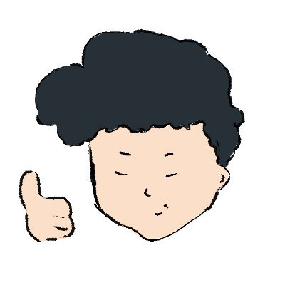
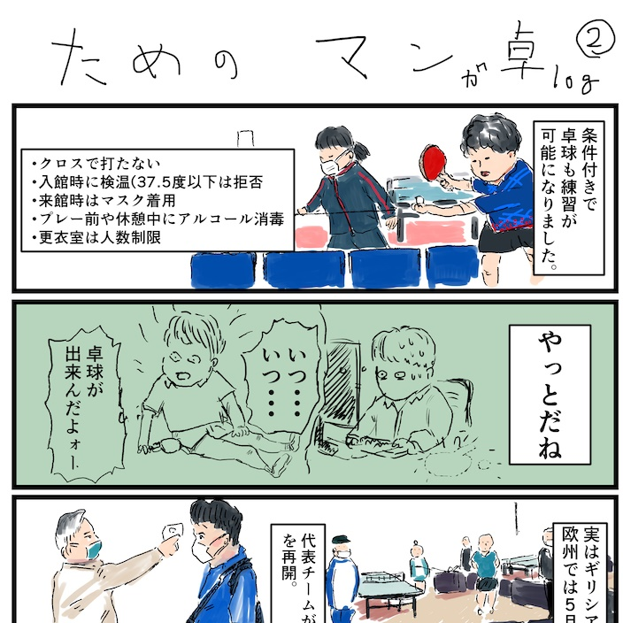
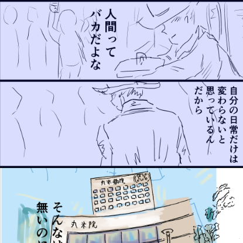

好きなもの①

一つはIT技術です。これまで医療AIや家庭向けIoTのベンチャーなどで働いてきました。
自分で独学でRubyやPython,ハードウェアではm5stackやrasberry-piを触っていました。
また、、簡単なコマンドライン(Vimなど）を触ったり、開発環境のセットアップなど試していました。
今年6月末に退職後に、4か月の職業訓練コースに通い始め、フロントエンド＋サーバーサイドを学んでいます。
前職では、エンジニアも含めた全職種の採用を行っていたので、クラウドレイヤーからＯＳレイヤーまで幅広く関心があります。
好きなもの②

二つ目は卓球です。中学から卓球を始めて、大学体育会では3年半の間、週６で練習していました。
今でも週１以上は卓球を社会人サークルを４つ掛け持ちして続けています。
以前は、卓球台をオフィスに置いている会社で卓球大会を主催したり、忘年会開いたこともあります。
IT業界には意外と卓球経験者が多いです。（元SkypeジャパンのCEOや、MITメディアラボの石井さんなど）
以前、立ち上げ期の卓球Ｗｅｂメディアで約50記事ほどライターとして執筆もしていました。（PNは座間辰弘）
好きなもの③

三つ目は漫画・イラストです。このサイトのイラストは全部自作です。手描き＋ClipStudioに板タブで描いています。
半年間の漫画教室に通い、ストーリー構成を中心に学んできました。
現在は毎週医療マンガと、コロナを裏テーマにしたマンガを描いてTwitterにあげています。。
Twitterからバズる漫画を早く出したいです。
特設ページを作るので良かったら見てください。